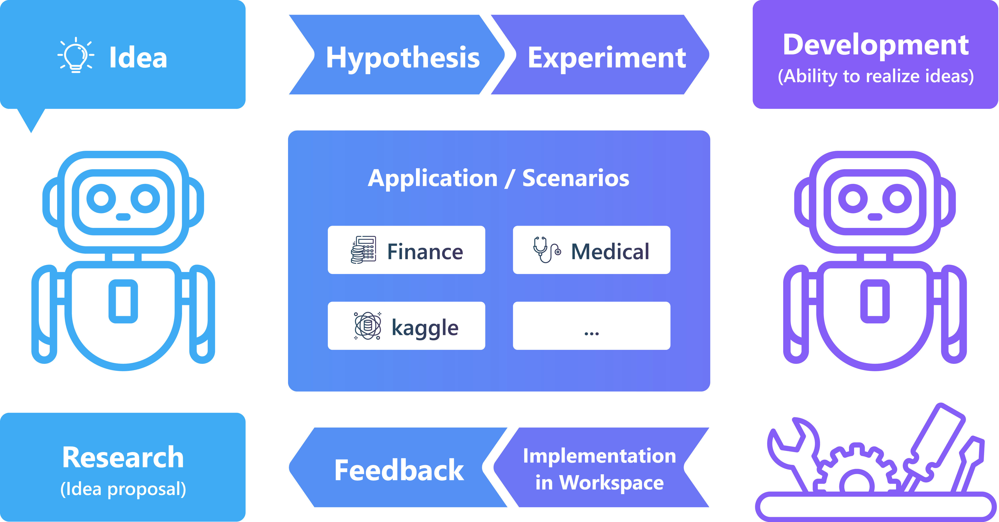

框架设计与组件¶
框架与组件¶
上面的图像展示了RDAgent的整体框架。
在数据挖掘专家的日常研发过程中，他们提出一个假设（例如，像RNN这样的模型结构可以捕捉时间序列数据中的模式），设计实验（例如，金融数据包含时间序列，我们可以在这种情况下验证假设），将实验实现为代码（例如，Pytorch模型结构），然后执行代码以获取反馈（例如，指标、损失曲线等）。专家们从反馈中学习，并在下一次迭代中进行改进。
我们建立了一个基本的方法框架，持续提出假设、验证假设，并从现实世界获取反馈。这是第一个支持与现实世界验证链接的科学研究自动化框架。
上图展示了主要类及其在对详细代码感兴趣的工作流程中的适配方式。